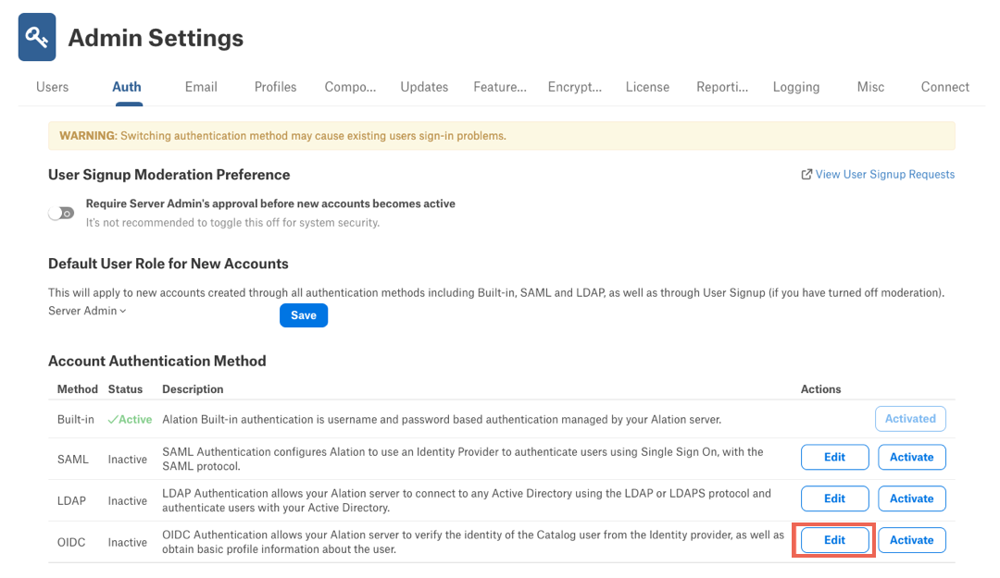
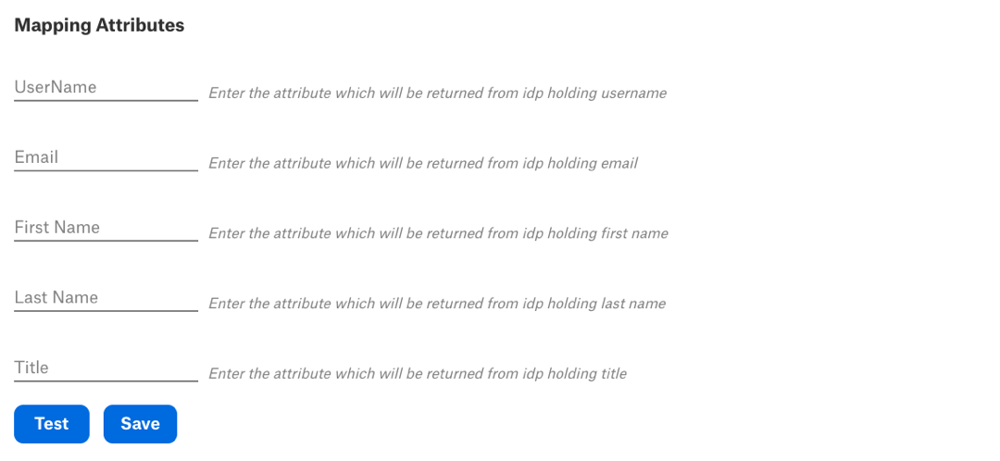

Configure Authentication with OpenID Connect¶
Available from version 2022.2
Alation supports SSO with OpenID Connect and the Auth0 identity platform.
Configuring this type of authentication is a two-step process. The first step is performed in AuthO by a user with admin-level access. The second step is performed in Alation by a Server Admin user in Admin Settings > Authentication.
STEP 1: Create an Application in Auth0¶
Perform this step to register your Alation application with Auth0.
Note
You may need the assistance of your IT team as this setup requires admin-level access to Auth0.
To create an app for Alation:
Log in to your Auth0 application.
Create a new tenant or use an existing tenant.
Under your tenant, go to Applications.
Create a new application for Alation:
Name - Specify a name for the application, for example, Alation OpenID Connect App.
Application type - Choose Regular Web Applications.
After creating the application, open its settings.
Under Application URIs, specify the following information:
Allowed Callback URLs - Add these URLs, substituting the placeholder <Alation_URL> with your Alation URL:
https://<Alation_URL>/auth/oidc/callback/?config_name=oauth_login_config, https://<Alation_URL>/auth/oidc/callback/?config_name=oauth_login_test_config&is_test_flow=true, https://<Alation_URL>/auth/oidc/callback/?config_name=oauth_login_config&is_test_flow=true
Allowed Logout URLs -
https://<Alation_URL>/loginor any other preferred logout URL.
Scroll down to the Advanced Settings part of the page. Expand the advanced settings.
Click on the Endpoints tab. This tab has a number of URLs you’ll need to specify in Alation when configuring authentication:
OAuth Authorization URL
OAuth Token URL
OAuth User Info URL
Save the application you created.
Collect other information required for Alation from the application settings:
Client ID
Client secret
Enable the Title Property¶
Alation supports the title property as part of the user profile. With OpenID Connect, you can send the title value as part of the id token which is present in the user_metadata attribute. To send the title, perform the following additional actions in Auth0 before configuring Alation:
In Auth0, go to Actions > Library and click Build Custom to open the Create Action dialog.
Enter a descriptive Name for your action, for example, Add user metadata to tokens.
In the Trigger field, select Login / Post Login as you’ll have to add this action to the Login Flow.
Click Create. You will land on the page with the action code editor.
Copy the following JavaScript code into the editor (delete all default content from the editor and paste the code given below).
// Title should be present as below attribute for user // "user_metadata": {"title": "SE" } exports.onExecutePostLogin = async (event, api) => { const namespace = 'http://alation.com'; const { title } = event.user.user_metadata; if (event.authentication) { // Set claims api.idToken.setCustomClaim(`${namespace}/title`, title); } };
Click Save Draft to save your changes.
Click Deploy.
Add the action you created to the Login Flow.
STEP 2: Configure OpenID Connect in Alation¶
This configuration requires a user with the Server Admin role. You will need the following information from the Auth0 application you created for Alation:
Client ID
Client secret
User Info Endpoint URL
Authorization Endpoint URL
Token Endpoint URL
Note
This information can be collected from the settings page of your Auth0 application. The client ID and secret can be found under Basic Information. The endpoint URLs are in Advanced Settings > Endpoints.
To set up SSO authentication with Auth0 and OpenID Connect:
Log in to Alation and go to Admin Settings > Authentication.
Under Account Authentication Method, locate OIDC and click Edit for this method. The OIDC configuration page will open in a separate browser tab.
Under Define your Authentication Provider in Alation, specify the following information:
Client Id - Client ID of the Auth0 application
Client Secret - Client secret of the Auth0
Scope - Specify the response scope. The minimal set of values is
openid,profile,email. For more information on defining the scope, refer to Auth0 documentation.User Info Endpoint URL - Endpoint to fetch user details. Use the value of the endpoint OAuth User Info URL in Auth0.
Authorization Endpoint URL - Endpoint used to authorize the user. Use the value of the endpoint OAuth Authorization URL in Auth0.
Token Endpoint URL: - Endpoint used to fetch OAuth token. Use the value of the endpoint OAuth Token URL in Auth0.
Select the Enable Single Signout checkbox if you want to use the single logout.
If you have selected Enable Single Signout, specify the EndSession Endpoint URL, using one of the formats below. The choice of a format depends on how you want to determine the outcome of the logout.
Important
Auth0 provides the ability to configure logout at the application level or the tenant level, with or without a redirect.
If you want to configure logout at the application level, then make sure that the URL that you specify in the
returnToparameter of the EndSession Endpoint URL is also listed in the Allowed Logout URLs field in the application you created for Alation in Auth0. If thereturnToURL is not specified, the server will redirect users to the first Allowed Logout URL set in the settings of the Auth0 application.If you want to configure logout at the tenant level, make sure that you have whitelisted the URL that you include in the returnTo parameter in the settings of the corresponding Auth0 tenant.
Application level - Users will log out from Alation or Alation and the IdP in case of the federated logout.
No redirect: EndSession Endpoint URL =
https://<auth0_domain>/v2/logout?client_id=<client_id_of_Auth0_app>With redirect: EndSession Endpoint URL =
https://<auth0_domain>/v2/logout?client_id=<client_id_of_auth0_app>&returnTo=<encoded_target_uri>Single logout from the IdP, no redirect: EndSession Endpoint URL =
https://<auth0_domain>/v2/logout?client_id=<client_id_of_auth0_app>&federatedSingle logout from the IdP, with redirect: EndSession Endpoint URL =
https://<auth0_domain>/v2/logout?client_id=<client_id_of_auth0_app>&returnTo=<encrypted_target_uri>&federated
Tenant level - Users will be logged out of Alation and all the applications under the current tenant and the IdP in case of the federated logout.
Note
Make sure the
returnToURL is whitelisted on the tenant level in Auth0.No redirect: EndSession Endpoint URL =
https://<auth0_domain>/v2/logoutWith redirect: EndSession Endpoint URL =
https://<auth0_domain>/v2/logout?returnTo=<encrypted_target_uri>Single logout from the IdP, no redirect: EndSession Endpoint URL =
https://<auth0_domain>/v2/logout?federatedSingle logout from the IdP, with redirect: EndSession Endpoint URL =
https://<auth0_domain>/v2/logout?federated&returnTo=<encrypted_target_uri>
Under Mapping Attributes, enter the attributes from the specified scope. Alation expects the following attributes:
UserName - a unique attribute defined in the IdP or the email. UserName can be mapped onto the
subclaim, which will be unique for every user. However, if you are confident that every user in your AD has a unique email, then this attribute can be set toemail.Email -
emailFirst Name -
given_nameLast Name -
family_nameTitle -
http://alation.com/title
Note
The Title attribute requires a custom action in Auth0. Make sure you have added the action in Auth0 before including this attribute in your configuration in Alation. See Enable the Title Property.
The attributes are returned from Auth0 by calling the User Info Endpoint. An example response below shows what attributes may be passed to Alation from Auth0:
{ "sub": "auth0|62664ee553327a00682e2a26", "nickname": "john.smith", "name": "john.smith@alationcatalog.com", "picture": "https://s.gravatar.com/avatar/5cad5e7?s=480&r=pg&d=https%3A%2Fcdn.auth0.com%2Favatars%2Fmu.png", "updated_at": "2022-04-25T11:40:59.238Z", "email": "john.smith@alationcatalog.com", "email_verified": true, "http://alation.com/title": "Engineer" "given_name": "john", // This field can be added using user update API "last_name": "smith" // This field can be added using user update API }
Click Test to validate that the configuration is correct. Clicking on Test will open a new tab where the currently logged in admin will be prompted to login to Auth0. On successful login, Alation will try to fetch the user details.
Note
If you get a login error although the configuration looks correct, try logging in using an incognito window or clear all browser cookies. For more troubleshooting tips, see Troubleshooting OpenID Connect Authentication below.
Click Save.
Go back to Admin Settings > Authentication.
Click on Activate for OIDC and in the confirmation dialog, click Confirm. The OIDC login will be activated for your Alation Catalog. Now users logging in to Alation will authenticate with their Auth0 or IdP credentials.
Troubleshooting OpenID Connect Authentication¶
Configuration Files to Review¶
The following configuration files storing the OpenID Connect configurations are created in AuthService as you are configuring OpenID Connect:
/opt/alation/site/config/authserver/oauth_login_config.json
/opt/alation/site/config/authserver/oauth_login_test_config.json - This configuration file is temporarily created during the connection test and is deleted after the test connection process is complete and results in either an error or success.
OpenID Connect Configuration Errors in the Alation User Interface¶
Invalid value for fields¶
{kind=link}
Cause¶
Some fields don’t pass validation when the user clicks Test on the OIDC configuration page.
Resolution¶
Check the field values based on the validation message. The fields that do not pass validation will be highlighted in red.
Changes unsaved¶
{kind=link}
Cause¶
Some fields don’t pass validation when the user clicks Save on the OpenID Connect configuration page. A validation message will be displayed for the corresponding fields and the fields will be highlighted in red.
Resolution¶
Check and update the field values. All fields are mandatory except EndSession Endpoint URL. The EndSession Endpoint URL field becomes mandatory if the Enable Single Signout checkbox is selected. All the URL fields — Authorization Endpoint URL, Token Endpoint URL, User Info Endpoint URL, and EndSession Endpoint URL — must be a URL in the valid format.
Something went wrong, please try again. Changes unsaved¶
{kind=link}
Cause¶
The user clicked Save on the OpenID Connect configuration page, but the AuthService is not running.
Resolution¶
Check the status of AuthService. Enable AuthService or restart it if it’s already enabled.
{kind=link}
500 Internal Server Error¶
{kind=link}
Cause¶
Authserver service is not running or the configuration stored in AuthService is malformed. This is not a common error, but may be the result of manual modifications to the configuration json file.
Resolution¶
Check the status of AuthService. Enable AuthService or restart it if it’s already enabled. Check that /opt/alation/site/config/authserver/oauth_login_config.json and is a valid json file by validating its structure with a json validation tool.
Check the Status of AuthService¶
To validate that AuthService is enabled:
Use SSH to connect to your Alation host.
Enter the Alation shell:
sudo /etc/init.d/alation shell
Using the alation_conf command, check the current state of AuthService:
alation_conf alation.authentication.service.enabled
The response will show either True (enabled, default) or False (disabled).
Enable AuthService¶
Note
From version 2022.2, AuthService is enabled by default.
To enable AuthService:
From the Alation shell, set the alation_conf parameter
alation.authentication.service.enabledtoTrue:alation_conf alation.authentication.service.enabled -s True
Redeploy the configuration:
alation_action deploy_conf_allRestart Alation:
alation_action restart_alation
Restart AuthService¶
To restart AuthService:
In the Alation shell, use the following commands:
Restart AuthService:
alation_supervisor restart java:authserver
Restart the Web component:
alation_supervisor restart web:*
Exit the Alation shell:
exit.